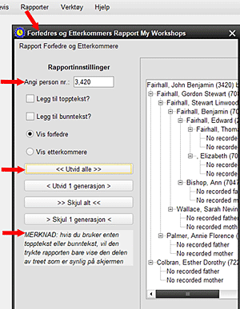

Dette skjermbildet lar brukeren se og skrive ut en begrenset rapport fra en eller flere generasjoner av forfedre eller etterkommere fra en valgt fokusperson 1. Bruk personvelgeren (fra PERSON >> Velg person etter), finn målpersonen for rapporten og noter personnummeret 2. Velg Forfedre/Etterkommer Report fra REPORTS-skjermen 3. Skriv inn personnummeret i den boksen, og trykk [TAST INN]. Personen vil vises i visningsområdet med sine forfedre (standard). 4. Du kan nå vise forfederdetaljer manuelt (klikk på plusstegnet +) eller bruk UTVID ALLE eller UTVID 1 GENERASJON knappene 5. Hvis du velger å vise etterkommere, gjelder de samme alternativene for utvidelse og kollaps 6. Hvis det kreves en utskrift, kan du legge til en topptekst og / eller bunntekst ved hjelp av valgboksene. Ved å velge UTSKRIFT åpnes standardinnstillingene for sideoppsettet, og deretter går du videre til utskrift med standardskriveren eller en annen valgt skriver VIKTIG NOTAT: Hvis du bruker enten en topptekst eller bunntekst, vil den trykte rapporten bare vise den delen av treet som er synlig på skjermen 7. Utskrift uten topptekst eller bunntekst vil gjengi all tekst, enten det er på skjermen eller ikke 8. Hvis du skriver inn nummeret til en annen person og trykker på [TAST INN], endres skjermen til å fokusere på vedkommende 9. Velg LUKK for å gå tilbake til HRE-hoveddisplayet. |
|
Relaterte temaer |